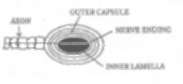

Asana
Description
This section is from the book "Holistic Medicine", by Shriniwas J. Kashalikar.
Asana
Asana means systematic assumption of certain postures or positions. Asanas are procedures to buttress the effects of other angas of yoga. It is thought appropriate to consider in brief the effects of kriyas. band has and mudras along with asanas.
Asanas have psychological bearing Many asanas mimick animals Many mimick plants Many mimick nonliving objects Asanas are important for feeling of oneness with the Jiving and nonliving universe They are important for getting rid of pride and achieving self effacement.
Asanas constitute churning of the whole body so as to get the cream of spirit in terms of Self realisation which is a result of awakening of kundalini when practiced along with yama and other angas of yoga.
Asanas involve co-coordinated,smooth,steady, disciplined contractions and/ or relaxations of muscles, systematic squeezing of tissues, stimulations of receptors, alteration in the blood flow, alteration in the characteristics of blood, stimulation of spinal cord and a varieties of regions of brain during neuromuscular activity, as a result of receptor stimulation and as a result of stimulation due to altered local metabolites Asanas are associated with direct stimulation of brain, spinal cord, as 111 It is not yet completely understood as to how these simple maneuvers such as compression, stretching, pressing twisting, distension etc. lead to such profound changes in one whole being, or at least complement or synergize such changes However effort has been made to probe in these gray areas.
All asanas cause stimulation of internal and external neural receptors (Fig3).
Fig. 3. Receptors.
Receptors are sensory transducers.
A. Mechanoreceptors - Pacinian corpuscle.
B. Sound receptors.
C. Chemoreceptors.
This causes stimulation of several parts of central nervous system Asanas cause stimulation of autonomic and peripheral nervous system also The nature of this stimulation is studied by physiologists and is depicted in the figure in a schematic manner (Fig 4].
Fig. 4. Record of electrical change in nerve.
However quantification of these effects merits attention and extensive investigation.
Some asanas such as sheershasana are associated with change (Fig 5) in posture and therefore besides stimulation of receptors it causes hemodynamic changes, displacement of viscera causing local changes which may involve blood flow as 111 as metabolic changes.
Fig. 5. Effect Of Sheershasana.
Effects of sheershasana include or may include hemorrheological changes as 111 as stimulation of receptors in the carotid vessels. Long term effects of gravitation may include reversal or altered calcification/ degeneration in bones.
Asanas such as chakrasana twist the vertebral column and cause stimulation of nerve roots at different levels |F.g 6).
Fig. 6. Chakrasana.
These asanas stimulate local blood flow and prevent congestion degeneration, fibrosis, osteoporosis etc in vertebral column and vertebral joints.
Quantification of these effects is however essential This is because careful evaluation of yogasana effects will enable effective application of yoga in therapy. Periodic X-rays, range of joint movements, muscle spasms, electromyographic records, measurement of blood flow etc will prove valuable Other effects subsequent to these local effects must also be studied.
Asanas such as sarvangasana cause compression of thyroid and parathyroid But the effects must be studied in terms of increase or decrease in hormone levels. Other metabolic parameters such as serum electrolytes, lipid profile and hemogram would also prove valuable While studying hemodynamic effects one must pay attention towards lower extremities, pelvic viscera, abdominal viscera, lungs, heart and brain.
It must be noted that the effects or benefits of asanas in various disorders are not merely due to mechanical changes resulting from asanas and hence studies involving measurements of change in pressure or such parameters alone are inadequate in assessing the therapeutic utility of asanas.
Asanas such as mayurasana, kukkutasana, vrishchikasana, sheershasana require recruitment of new input and output pathways for regulation of posture. This is likely to give rest to routine pathways active in regulation of posture and establish new synaptic connections in die newly recruited pathways. Assumption of this posture is likely to alter psychological orientation and attention thus proving beneficial in anxiety states Studies such as those mentioned earlier must be supported by studies of electromagnetic,bioelectric ar.d b 10electromagnetic fields. This is true for all asanas in any case. Moreover these studies must be performed with several permutations and combinations as regards their chronological relationship with each other and interactions.
Asanas such as padmassana are supposed to help an individual collect one's personality Yoga considers die concrete physical and physiological factors and recognizes their importance in the process of self relaxation because it comprehends the fact that the cosmic consciousness is in fact in continuity with physico-physiological processes.
But though this is agreeable on intuitive and subjective grounds objective evidences must be searched using high tech procedures to measure nano and pico volts of voltage fern to and atto seconds of time involved in many changes.
At the moment NMR, computerized axial and positron emission tomography immunocytochemical techniques, Kiriian photography etc. are available and must be made use of in the field of yoga.
The concept of 'closing'circuit/s ofbioelectricity in asanas and mudras must be evaluated. It must be found out if there is prevention of entropy or reversal of entropy and if so. to what extent.
Asanas such as chakrasana involve alternate compression and decompression of lungs These compression and decompression however have to be further studied to understand the mariners in which they are likely to influence the health status.
Mere measurements of air entry and air exit are not enough for one may have to study die volley of sensory impulses and motor output.
The asanas may also influence the body processes on the basis of stimulation of acupressure points This possibility with respect to asanas such as Vajrasana, Padmasana and asanas in general where unusual part are pressed, mustbe explored.
The concept of meridians, the concept of nadis, the concept of bioelectric fields, and the concept of evolutionary transformation in frozen'soul mustbe corroborated.
Some asanas have very obvious mechanical effects. Take for example Pavanamuktasana In pavanamuktasana benefit of compression and antigravity movement of gases from rectosigmoidal contents is taken.
Continue to: